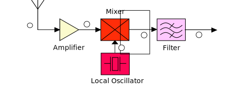

RF Module
RF subsystem is used to translate the message signal from baseband to carrier frequency and vice versa.In its simplest form, the RF block looks like this
Those are an awful lot of blocks that are thrown at you. Don't worry. We shall explore this, one slice at a time.
Let us first, examine the receiver part of the RF block. Go ahead and check the signal at every connection in the spectrum Analyzer below.
Now play around by changing the carrier signals, Local Oscilator signal. Pay special attention to the signal at the Mixer output.